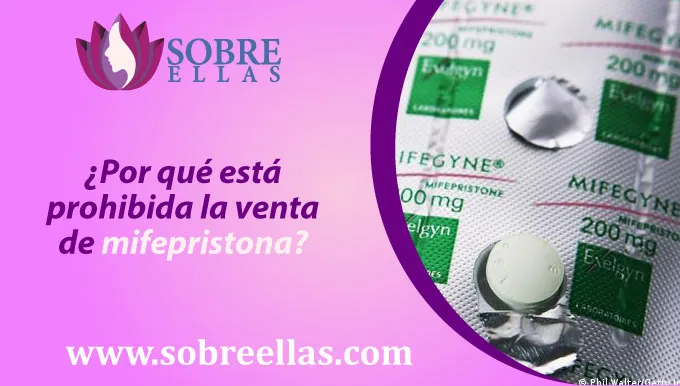
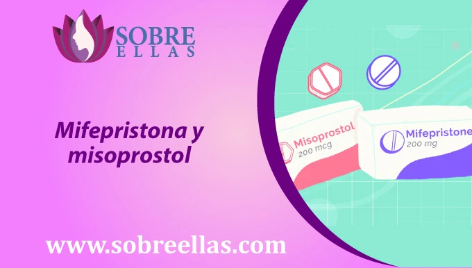

Comprar mifepristona en Inkafarma
-
addContenido
Al percatarse de la ausencia de la menstruación muchas mujeres y parejas empiezan a buscar posibles opciones para solucionar embarazo no deseado, entre ellas buscan comprar pastillas abortivas como son : mifepristona y misoprostol.
Estás pastillas actúan en el organismo femenino contrarrestando las hormonas/ sustancias que el cuerpo produce en el embarazo dando como resultado un aborto seguro en casa.
Es preciso mencionar que para adquirir estas pastillas se debe contar con receta médica (para el misoprostol) de lo contrario en las farmacias van a negarle la compra
¿Venden mifepristona en Inkafarma?
La mifepristona no está disponible en Inkafarma ni en otra farmacia del país porque en Perú el aborto está penado y la venta de mifepristona es ilegal.
Siendo la mifepristona un medicamento para inducir abortos, este no está para la venta en farmacias a comparación del misoprostol que sí está, siempre y cuando se cuente con receta médica para úlceras y gastritis ya qué el misoprostol además de inducir abortos también es un tratamiento para enfermedades gastrointestinales.
Si usted está en una situación de embarazo o con dudas acerca de si está embarazada o no, puede escribirnos al WhatsApp para recibir opciones sobre qué hacer ante un embarazo no deseado e información de un aborto seguro en casa.
¿Por qué está prohibida la venta de mifepristona?
Siendo abortar en casa de manera segura la razón más común del uso de la mifepristona, esta pastilla también es usada como anticonceptivo de emergencia ( pastilla del día después) para tratar tumores ubicados en el cerebro, fibroides (tumores benignos) fibrosis y para inducir al parto.
Identificar mifepristona falsa
Como en Perú es difícil encontrar mifepristona ya que es ilegal, es muy complicado el adquirir este producto para realizar un aborto y de encontrarlo debemos primero verificar si es una medicamento original, debido a que podría estafarlo.
¿Cómo reconocer mifepristona original?
Si la pastilla mifepristona tiene las siguientes características es original.
- El empaque es de aluminio.
- Está sellado.
- Es de color blanco.
- Es de forma circular.
Puede conseguir pastilla mifepristona original con nosotros, que lo exportamos desde los países donde abortar y la venta de mifepristona no están penados, países cómo Argentina. Las presentaciones son de la marca Mifegyne en pote.
Mifepristona y misoprostol
La mifepristona es una pastilla que en combinación del misoprostol brinda el 98% de efectividad para interrumpir un embarazo no deseado.
El misoprostol puede hacer efecto por sí solo, pero la mifepristona sin el misoprostol no garantiza un aborto. Recuerda que si estás embarazada y no quieres tenerlo, nosotros podemos ayudarte a solucionar el embarazo con pastillas abortivas.
Llevamos más de 10 años en el rubro, contamos con experiencia y médicos encargados en brindar asesoría y acompañamiento en todo lo que dure el proceso ¡No tienes porqué hacer esto sola, escribenos!
¿Cómo se toma la mifepristona?
La administración de la mifepristona es :
- Tomar en ayunas
- Tomar de 24 a 48 horas antes de la primera administración del misoprostol.
En cuanto tiempo hace efecto la mifepristona
La mifepristona hace efecto después de una hora y media aproximadamente. Este medicamento puede presentar los siguientes efectos secundarios:
- Náuseas
- Vómitos
- Taquicardia
- Sangrado
- Cólicos
- Dolor pélvico
- dolor de cabeza
Es importante que no tome jugo de toronja antes, durante y después de la administración de mifepristona ya que puede hacer que entre más medicamento en la sangre ocasionando la aparición de más síntomas o empeorando estos.
¿Cómo se toma el misoprostol?
Para tomar misoprostol para abortar, es necesario pasar por la asesoría y consulta de un médico para que te indique que dosis necesitas de acuerdo al tiempo de embarazo que tengas.
De 3 a 8 semanas
Para este tiempo de gestación es necesario administrar 8 pastillas cytotec
- Suministrar vía sublingual, vaginal o bucal (entre las mejillas)
- Cada 3 horas tomar 4 pastillas cytotec
- De tener sangrado antes de terminar las pastillas, igual debe usarlas. Es importante no suspender la administración de pastillas aún así exista sangrado.
De 8 a 16 semanas
Para este tiempo de gestación es necesario administrar 12 pastillas cytotec
- Suministrar vía sublingual, vaginal o bucal (entre las mejillas)
- Cada 3 horas tomar 4 pastillas cytotec
- De tener sangrado antes de terminar las pastillas, igual debe usarlas. Es importante no suspender la administración de pastillas aún así exista sangrado.
¿En cuánto tiempo hace efecto el misoprostol?
El misoprostol hace efecto después de dos horas su uso. Sabemos que el misoprostol está haciendo efecto cuando empezamos a presentar síntomas de aborto o efectos secundarios de haber tomado la pastilla.
Es muy importante resaltar que, dependiendo del cuerpo de la mujer y de su organismo, el tiempo de efectividad puede variar.
Es importante que no tome jugo de toronja antes, durante y después de la administración de mifepristona ya que puede hacer que entre más medicamento en la sangre ocasionando la aparición de más síntomas o empeorando estos. Este medicamento puede presentar los siguientes efectos secundarios:
- Nauseas
- Vomitos
- Taquicardia
- Sangrado
- Colicos
- Dolor pélvico
- Dolor de cabeza
- Diarrea
- Escalofrios
- Fiebre
- Coagulos
¿Después de abortar puedo tener hijos?
Es muy común escuchar que luego de abortar uno no puede tener más hijos, siendo esta una preocupación grande ya que algunas de las mujeres que abortan planean tener hijos a futuro y con el miedo de no poder más adelante pues deciden continuar con su embarazo no deseado. Esta creencia es totalmente falsa, uno después de abortar puede tener hijos. De hecho se recomienda empezar a buscar un método anticonceptivo para evitar de nuevo un embarazo. Este es un mito creado y difundido con la intención de manipular a las mujeres y condicionar su decisión acerca de abortar.
Ciudades donde vendemos mifepristona
Reafirmando nuestro compromiso de brindar, asegurar un aborto seguro y accesible en casa, hemos llegado a la mayoría de ciudades del Perú donde puedes adquirir tus pastillas o medicamentos para abortar de manera, segura, discreta y accesible.
Somos médicos profesionales con más de 10 años de experiencia y confianza. Envíamos las medicinas a todo el Perú. Contando con más de 10 ciudades donde hacemos entregas contra entrega y delivery.
Escríbenos para saber si perteneces a estas ciudades. Recuerda que la consulta es totalmente gratis, la consulta es necesaria para saber cuánto tiempo de gestación tienes y así poder recetar la dosis de misoprostol y mifepristona adecuada.
- Mifepristona en Chiclayo
- Mifepristona en Puno
- Mifepristona en Lima
- Mifepristona en Arequipa
- Mifepristona en Cusco
- Mifepristona en Trujillo
- Mifepristona en Moquegua
- Mifepristona en Ica
- Mifepristona en Piura
- Mifepristona en Tacna
- Mifepristona en Huancayo
- Mifepristona en Huacho
- Mifepristona en Chimbote
- Mifepristona en Callao
- Mifepristona en Abancay